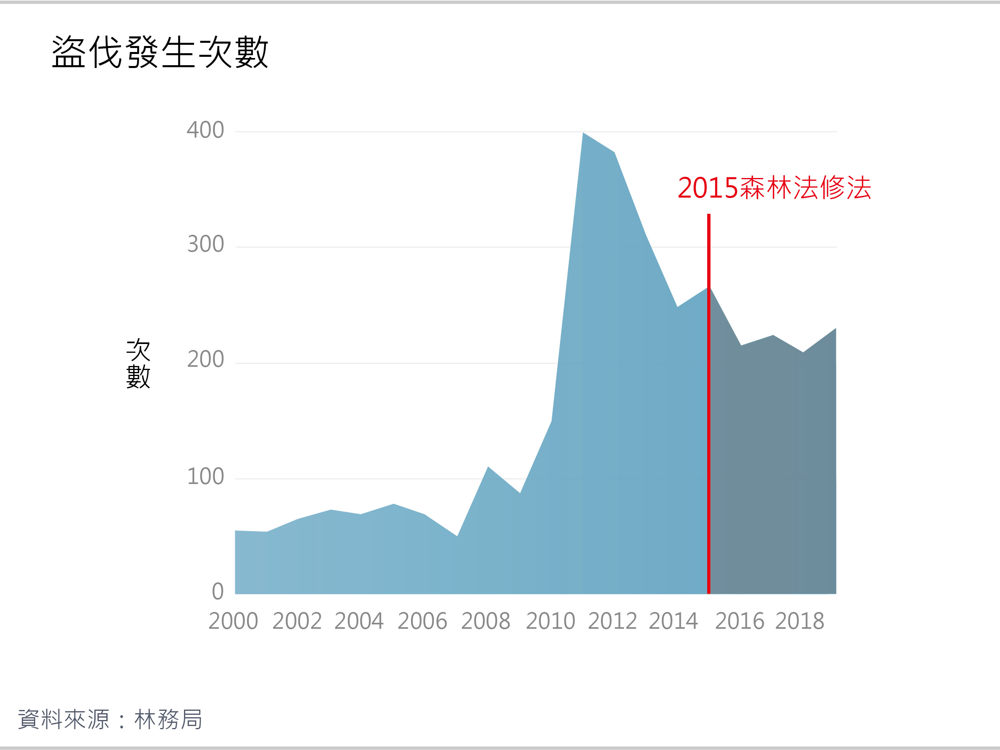
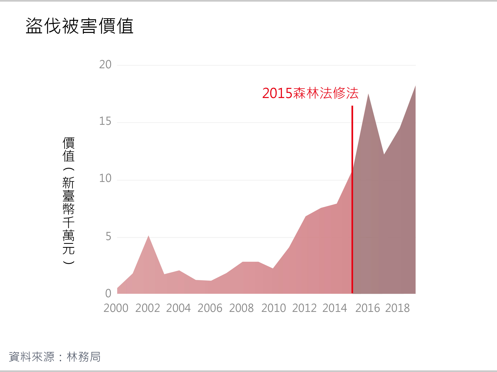
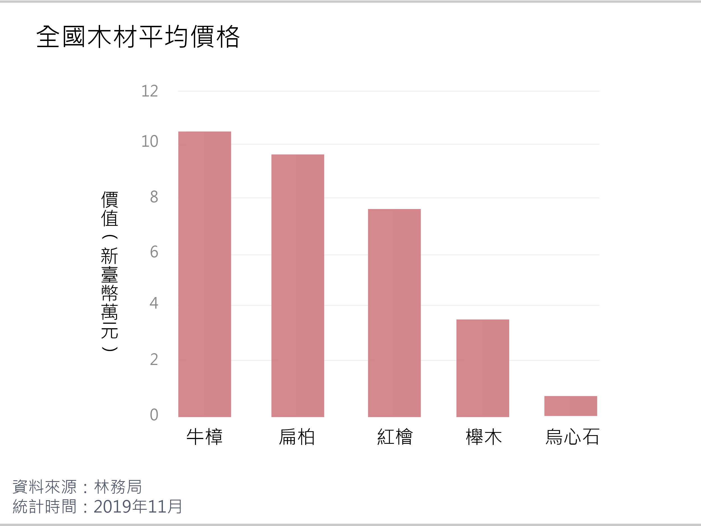
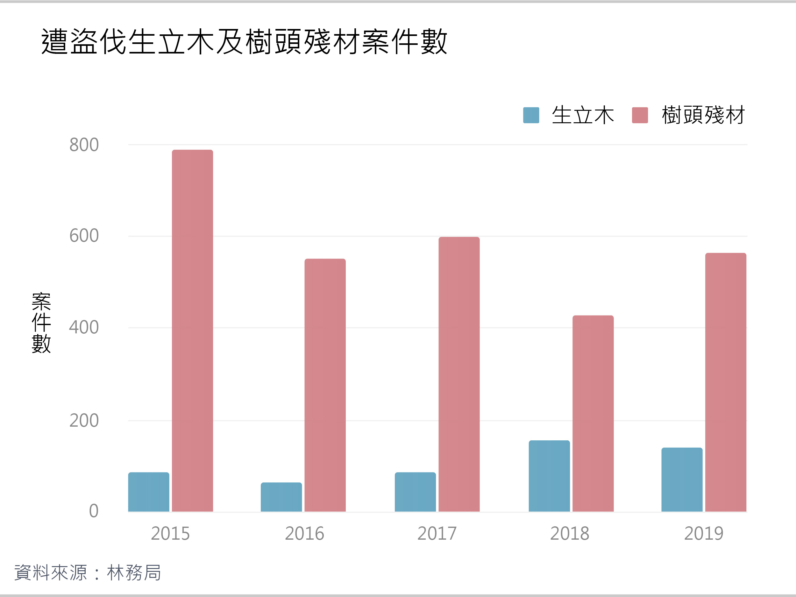

廣大的臺灣森林裡，隨著海拔梯度巨大的跨度，孕育著相當多樣化的自然環境。不僅僅有分佈於暖溫帶的針葉樹種，更有分佈於熱帶的闊葉樹種。而森林法所列出之12種受保護之珍貴樹種，其中10種就是臺灣特有的「針葉五木」及「闊葉五木」。這些樹種不只是在資本市場中擁有高經濟價值，它們更是在臺灣島嶼上背負著豐饒之生態價值、承載著人文生態史之文化價值，呈現臺灣森林的獨特性與多樣性。
四百多年來，漢人來到臺灣，墾殖、材薪與樟腦等需求，造成了低地森林的破壞，日治時代則開啟了大規模的伐木事業，往中海拔針闊葉混合林伐木。1945年國民政府來台後，推動「以農林培植工商業」的產業政策，開始大量砍伐原始森林，幾乎伐盡幾大林場的檜木林。
隨著1989年在民間的壓力下，林務局改制為「公務機構」，無需再自籌運作成本，加上1991年行政院通過禁伐自然林之政策，歷時約八十年的大伐木時代宣告終結，臺灣島嶼上的森林才擁有了喘息的空間。臺灣國有林事業區主管機關為林務局，目前共設立八個林務管理處（下稱林管處）。

臺灣林管處森林管轄區域，八個林管區林木面積大小不一
根據PRIDE政策指標資料庫中的2018年OECD資料，臺灣的森林覆蓋率為60.73%，位居51名，低於34名的日本，高於韓國、美國、中國等國。必須了解的是，臺灣森林並非都是原始林，因為在日治時期至戰後的大伐木時代，曾受過極大規模的破壞，現在臺灣部分森林是人工造林而成，顯見森林資源的運用與保護，是臺灣十分重要的課題。
森林盜伐案件變化趨勢
觀察近二十年的森林盜伐案件發生次數，可以發現2009年以前，每年案件發生次數落在50至100餘次之間，到了2010年大幅增加（149次），並於2011年達到高峰（394次）。2015年《森林法》修法提高罰責後至今，盜伐發生次數逐漸趨緩，但平均每年發生200次，仍是高於2000年代一倍以上。
盜伐發生次數，森林法修法後逐漸趨緩
2010年起盜伐案件數，之所以呈現飆升現象，一直備受矚目。《臺灣林業》指出，遊客需求帶動產業鏈是一大原因。2008年，政府全面開放陸客來臺觀光，檜木製成的藝品例如聚寶盆，深受特定消費族群喜愛，讓市場價格節節高升。另一個原因，根據《豐年雜誌》報導，則是合法木材供不應求，盜伐者眼見有利可圖，以致計畫性的盜伐案件屢見不鮮。
對於被盜伐的林木，林務局每年會計算其被害價值，即於市場賣出的收益，計算方法有透過木材市價資訊系統查詢估價，以及向木製藝品店訪價進行估價 。
將盜伐發生次數與被害價值兩相對照，值得注意的是，雖然盜伐發生次數在近五年內漸趨平緩，被害價值卻持續上升。從2015年起，每年皆超過1億元，並於2019年達到最高峰的1.8億元。
盜伐被害價值，森林法修法後持續攀升
盜伐發生次數與被害價值變化趨勢的不同，實為2015年《森林法》修法所致。原先《森林法》第50條加重竊取森林主、副產物罪，判處6月以上5年以下有期徒刑，併科贓額二倍以上五倍以下罰金。在《森林法》修正法案生效後，該法第52條提高罰則至1年以上、7年以下有期徒刑，且須被科處贓額五倍以上、十倍以下的罰金。犯罪成本的提高，讓盜伐者因而傾向由經濟價值高的樹種下手。
臺灣木材市場中，同樣屬於森林法貴重樹種的牛樟、扁柏與紅檜，位居價格榜的前三名，也是盜伐者的首要目標。坊間流傳牛樟芝具抗癌保肝等療效，使盜伐者砍倒牛樟木、從中採集牛樟芝的事件時有所聞。而扁柏、紅檜生長於太平洋沿海的中海拔雲霧地帶，目前僅存於北美洲、日本、臺灣，常被用於製作工藝品。
全國木材平均價格，牛樟、扁柏、紅檜位居前三名
森林盜伐樣態分為生立木、樹頭殘材、副產物、漂流木等類型。樹頭殘材則多來自日治時期到1980年代，伐木後遺留未挖除之樹根，以紅檜、扁柏等為大宗。樹頭殘材因體積小，無須使用大型機具鋸切、搬運，是盜伐者的主要盜取標的。
近五年的遭盜伐生立木及樹頭殘材案件數中，樹頭殘材案件數均明顯多於生立木，而樹頭殘材案件數的變化趨勢，與圖三盜伐發生次數走勢相同，在2015、2017與2019年時較多，其餘年份則較低，顯示樹頭殘材為盜伐案件中最主要的盜伐樣態。
遭盜伐生立木及樹頭殘材案件數，樹頭殘材為主要盜伐樣態